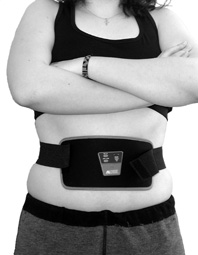

 Suomessakin television ostoskanavilla markkinoitavia sähkösykäyksiä lähettäviä laihdutus- ja lihastreenausvöitä mainostetaan FTC:n ja ACCC:n mukaan harhaanjohtavilla väitteillä. Mainoksissa todetaan, että pelkästään vyötä käyttämällä kehittyy jokaiselle mitään muuta tekemättä pyykkilautavatsa ja että kyseinen laite polttaa rasvaa ja kaventaa vyötäröä kymmenen senttiä kuukaudessa. Lisäksi vyön käytön väitetään olevan 30 prosenttia tehokkaampaa kuin perinteisen vatsalihasharjoittelun: kun laitetta pitää kymmenen minuuttia päällä, vastaa se mainosten mukaan 600 vatsalihasliikettä.
– Monien vuosien ajan niin sanottujen laihdutus- ja kuntoilutuotteiden markkinoijat ovat käyttäneet hyväkseen ylipainoisten ja huonokuntoisten ihmisten tilaa, valittaa FTC:n puheenjohtaja Timothy J. Muris.
– Turhaa toivoa on levitetty laajasti, mutta valitettavasti laihdutukseen ja fyysisen kunnon kehittämiseen ei edelleenkään ole olemassa ihmelääkkeitä tai -laitteita. Ainoa toimiva metodi on ruokavalion muuttaminen ja säännöllinen liikunta.
FTC haastoi tämän vuoden huhtikuussa oikeuteen kolme ”sähkövöitä” laajasti markkinoivaa yritystä: AB Energizerin, AbTronicin ja Fast Absin. ACCC puolestaan haastoi oikeuteen AbTronicin.
FTC:n kanteen mukaan vyöt eivät ole läheskään niin turvallisia ja kaikille ihmisille sopivia kuin esitteissä annetaan ymmärtää. Vöitä markkinoivat yritykset eivät varoita laitteiden ostajia siitä, että vyö saattaa aiheuttaa terveydellisiä ongelmia henkilöille, joilla on sydämentahdistin tai muita metallisia tai elektronisia kojeita kehossaan. Ohjeissa ei myöskään varoiteta käyttämästä laitetta turvonneiden tai tulehtuneiden kehonkohtien päällä tai syöpäkasvaimen läheisyydessä. FTC:n mukaan ei ole osoitettu, että laitteen käyttö olisi vaaratonta raskaana oleville naisille. Joitakin laitteita markkinoidaan turvallisina käyttää rintakehän alueella.
Eritoten FTC paheksui sitä, että sähkövöiden myyntiä edistetään USA:n kansallisilla kaapelikanavilla. Mainokset saattavat kestää jopa 30 minuuttia, ja pyöriä tuhatkin kertaa. Mainoksissa tuotteiden puolesta todistavat tunnetut kuntoiluammattilaiset ja kehonrakentajat. Valokuvissa esiintyy hyväkuntoisia malleja, ja myös tavallisten kansalaisten todistuskertomukset kuulostavat vakuuttavilta.
FTC kehottaa ihmisiä suhtautumaan skeptisesti todistuspuheenvuoroihin, sillä laitteita käyttäneiden kokemukset eivät ole yleispäteviä. Jos laite on toiminut jollakin henkilöllä, ei se tarkoita että se toimisi kaikilla.
Vöiden myyntiin liittyvä takuu ”saat rahat takaisin, jos et ole tyytyväinen” ei aina toimi. Vuoden takuu osoittautuu usein vain 30 päivän takuuksi. Rahat takaisin saattaa räikeimmissä tapauksissa saada vain, jos maksaa itse laitteen palautuskustannukset.
Tuttavaperhe tilasi noin 800 vanhaa rahaa maksaneen AbTronic-vyön suomalaiselta ostoskanavalta. Mukana seurannut ohjevihko kertoi laitteesta huomattavasti maltillisemmin kuin ostopäätökseen vaikuttaneet televisiomainokset. FTC:n peräämiä varoituksia oli vihkossa moneen lähtöön.
AbTronicin suomalaisessa käyttöohjeessa kerrotaan, että laitteen toiminta perustuu sen iholle lähettämiin pieniin sähkösykäyksiin. Sykäykset aiheuttavat lihasten supistumisen ja rentoutumisen – lihas vuoroin jännittyy ja rentoutuu. Nämä liikkeet vastaavat ohjeen mukaan normaalissa lihasharjoituksessa toistuvia jännityksiä. ”Kymmenessä minuutissa vatsalihakset tekevät noin 600 liikettä. Kuvittele kuinka monta vatsapunnerrusta sinun täytyisi tehdä päästäksesi samaan!”
Eteenpäin manuaalia selatessa huomaa, etteivät nämä 600 vatsalihasliikettä pelkästään riitä toivottuun tulokseen pääsemiseksi. Vihko antaa vinkin: ”Lihakset kasvavat, kun jännität käsiteltävää lihasryhmää samanaikaisesti harjoitusten kanssa.” Lisäksi AbTronicia suositellaan käytettäväksi kuntosalin jälkeen samoihin lihaksiin, joita juuri on harjoitettu. Koko laitetta ei ohjeen mukaan edes välttämättä tarvita, sillä vyöharjoituksen voi korvata jännittelemällä lihaksiaan itse! Vatsasta pääsee helpoiten eroon vetämällä mahaa sisään ja selkää suoraksi tunnin ajan päivässä.
Vihkossa todetaan laitteen olevan hyvä apu kiinteyttämään veltostuneita lihaksia ja vähentämään selluliittia ja painoa. Laihdutukseen laite ei ole paras keino: ”Laihduttaa pitää jokaisen itse, vaikka kaloreita sähkösykäyksissä palaakin.” Laitteen luvataan kuitenkin tekevän lihakset ja ihon kiinteäksi laihdutuksen aikana ja sen jälkeen. Tämä pitänee paikkansa – ainakin, jos toteuttaa vihkon kehotusta noudattaa tasapainotettua ruokavaliota ja juoda kahdeksan lasillista vettä päivässä.
FTC:n peräämiä varoituksia vihkossa on riittävästi. Aluksi todetaan, että ”laite on tarkoitettu terveille henkilöille lihaskunnon lisäämiseen, ei sairauksien hoitoon”. Sitten kerrotaan, ettei laitetta saa käyttää henkilö, jolla on sydämentahdistin tai syöpä. Varoituksia on useita:
Lisäksi laitetta kielletään käyttämästä, jos henkilöllä on taipumus saada verenvuotoa tai jos hänellä on avohaavoja tai murtumia. Laitetta ei myöskään saa käyttää leikkausten jälkeen, sillä sähkösykäykset saattavat estää lihasten ja kehon parantumista. Lisäksi käyttö on kielletty alavatsaan kuukautisten aikana ja ihon alueella, jossa on tuntohermojen vaurioita ja vähemmän hermopäitä kuin normaalilla iholla. Jotkut ihmiset voivat varoitusten mukaan tuntea ärsytystä tai yliherkkyyttä sähköstimulaation aikana.
Kirjoittaja Risto K. Järvinen on Skeptikko-lehden päätoimittaja